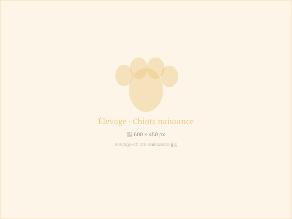

The beginning
A passion born
in the snow
It all started with a Siberian Husky — Arctic, our first breeding male — who arrived on a January morning in 2015 at our home in Sierre. His ice-blue gaze and untameable energy changed everything.
Passionate about these strikingly beautiful Nordic breeds, we quickly understood that our mission would be to share this magic with other families — by raising healthy, balanced, loved puppies from their very first breath.

Our philosophy
Raised with love,
born for life
At our kennel, every puppy is born inside the house — not in a kennel building. The mothers live with us; the babies grow up surrounded by our everyday sounds, our voices, our children.
We strictly follow socialisation timelines, veterinary protocols, and FCI standards. Every departure is a carefully prepared farewell.